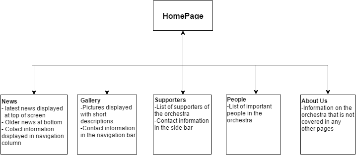

Members:4Oscar Bryett, Wannajak Kopraditsakul
The goal of the new site is to improve the functionality and design to be easier to use and therefore increase the number of people who use the site and sign up for newsletters from the site. This will generate more public interest in the orchestra.
The success of the site will be displayed through an increased interest in the website and the increase in memberships and newsletters sold.
1. The target audience for the site is for adults aged 20-30 with an interest in attending the concerts, as well as for supporters of the orchestra.
2. The site will use visualization and placement of key elements to direct the attention of visitors. Key elements will be the Menu to make navigation easy for users as well as sign up and FAQ sections.

provide links here to your 2 comps (images or Web pages)
provide a link here to your developed pages